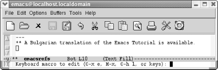
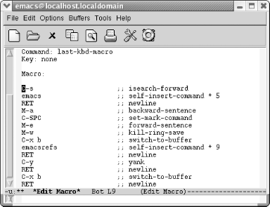
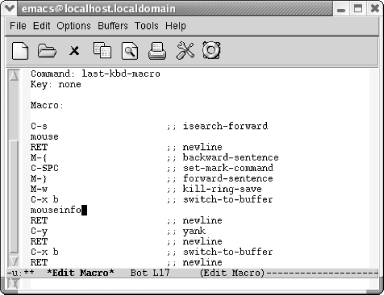
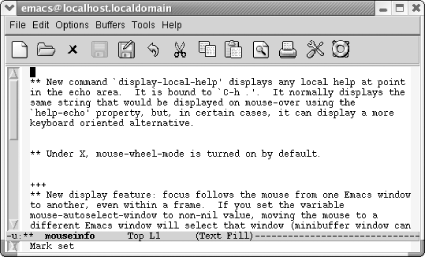

{% include JB/setup %}
{% raw %}
<div>
<div class="book" xml:lang="en"><div class="book"><div class="book"><div class="book"><h1 class="title"><a id="gnu3-CHP-6-SECT-4" class="calibre1"></a>Editing a Macro</h1></div></div></div><p class="copyright">You can edit a macro and
<a id="gnu3-CHP-6-ITERM-2269" class="calibre2"></a>
            <a id="gnu3-CHP-6-ITERM-2270" class="calibre2"></a>make
changes to it in a few different ways. For this example, we chose an
all-purpose editing command, <span><strong class="calibre5">edit-kbd-macro</strong></span>, which is bound to <span><strong class="calibre5">C-x C-k e</strong></span>. Several macro editing commands are
available, but this one works for all types of macros, so
it's good to learn.</p><p class="copyright">Our macro could use a bit of tweaking. First of all, finding
references to Emacs in our copy of the Emacs
<span><em class="calibre7">NEWS</em></span> file is pretty lame. Perhaps
we're interested in using a mouse more frequently
with Emacs and would like to know about changes to that part of the
interface. We'll edit the macro to search for the
word <span><em class="calibre7">mouse</em></span>. We'll also modify
it so it marks a paragraph rather than a sentence since a sentence
doesn't really provide enough context to be helpful.</p><p class="copyright">Let's start editing the macro.</p><div class="book"><a id="ch06-6-fm2xml" class="calibre2"></a><table class="calibre8"><colgroup class="calibre9"><col class="calibre10"/></colgroup><tbody class="calibre15"><tr class="calibre12"><td class="calibre17">
                        <p class="copyright">Type: <span><strong class="calibre5">C-x C-k e</strong></span>
                        </p>
                     </td></tr><tr class="calibre12"><td class="calibre17">
                        <p class="copyright">
                           </p><div class="book"><div class="mediaobject"><a id="I_6_tt177" class="calibre2"></a></div></div><p class="copyright">
                        </p>
                     </td></tr><tr class="calibre12"><td class="calibre19">
                        <p class="copyright">Emacs prompts you for the type of macro to edit.</p>
                     </td></tr></tbody></table></div><p class="copyright">Emacs asks you if you want to edit the last keyboard macro (<span><strong class="calibre5">C-x e</strong></span>), a named macro (<span><strong class="calibre5">M-x</strong></span>), the last 100 keystrokes as a macro,
termed "lossage" (<span><strong class="calibre5">C-h l</strong></span>), or keys (meaning the keystrokes you
bound a macro to). Yes, that's a lot of choices, and
later in the chapter we describe named macros and binding macros to
keys (you can experiment on your own with creating a macro from
lossage). For now, just choose <span><strong class="calibre5">C-x e</strong></span>
to edit the last keyboard macro.</p><div class="book"><a id="ch06-7-fm2xml" class="calibre2"></a><table class="calibre8"><colgroup class="calibre9"><col class="calibre10"/></colgroup><tbody class="calibre15"><tr class="calibre12"><td class="calibre17">
                        <p class="copyright">Type: <span><strong class="calibre5">C-x e</strong></span>
                        </p>
                     </td></tr><tr class="calibre12"><td class="calibre17">
                        <p class="copyright">
                           </p><div class="book"><div class="mediaobject"><a id="I_6_tt178" class="calibre2"></a></div></div><p class="copyright">
                        </p>
                     </td></tr><tr class="calibre12"><td class="calibre19">
                        <p class="copyright">Emacs opens an <code class="calibre21">*Edit Macro*</code> buffer.</p>
                     </td></tr></tbody></table></div><p class="copyright">Notice two fields near the top of this buffer,
<code class="calibre21">Command</code>: and <code class="calibre21">Key</code>:. Right now,
<code class="calibre21">Command</code>: says <code class="calibre21">last-kbd-macro</code>.
If this were a named macro, the command would be the name you gave
your macro. Additionally, for frequent use, you can bind your macro
to a key, at which point the <code class="calibre21">Key</code>: field lists the
keystrokes to execute this macro. Right now it says
<code class="calibre21">none</code> because we haven't defined
any keystrokes yet.</p><p class="copyright">Note that Emacs inserts comments all through the macro.
It's attempting to map keystrokes to commands. You
do not need to update these comments or add comments if you add
commands to your macro; Emacs does that itself.</p><p class="copyright">To tweak our macro, we change the search string on the second line
from <span><em class="calibre7">emacs</em></span> to <span><em class="calibre7">mouse</em></span>. Note
that we can just press <span><strong class="calibre5">C-k</strong></span> to wipe
out the line and type mouse. Now change <span><strong class="calibre5">M-a</strong></span> to <span><strong class="calibre5">M-{</strong></span>
and <span><strong class="calibre5">M-e</strong></span> to <span><strong class="calibre5">M-}</strong></span>. We change the buffer name from
<code class="calibre21">emacsrefs</code> to <code class="calibre21">mouseinfo</code>.</p><div class="book"><a id="ch06-8-fm2xml" class="calibre2"></a><table class="calibre8"><colgroup class="calibre9"><col class="calibre10"/></colgroup><tbody class="calibre15"><tr class="calibre12"><td class="calibre17">
                        <p class="copyright">We've made the edits from the previous paragraph.
The screen looks like this:</p>
                     </td></tr><tr class="calibre12"><td class="calibre17">
                        <p class="copyright">
                           </p><div class="book"><div class="mediaobject"><a id="I_6_tt179" class="calibre2"></a></div></div><p class="copyright">
                        </p>
                     </td></tr><tr class="calibre12"><td class="calibre19">
                        <p class="copyright">A modified macro that captures information about using a mouse in
Emacs.</p>
                     </td></tr></tbody></table></div><p class="copyright">To exit the macro editing buffer, we have to type <span><strong class="calibre5">C-c C-c</strong></span> and go back to our
<code class="calibre21">NEWS</code> buffer. Let's do that and
then execute the macro again to see what happens.</p><div class="book"><a id="ch06-9-fm2xml" class="calibre2"></a><table class="calibre8"><colgroup class="calibre9"><col class="calibre10"/></colgroup><tbody class="calibre15"><tr class="calibre12"><td class="calibre17">
                        <p class="copyright">Type: <span><strong class="calibre5">C-c C-c C-x b Enter M-&lt; M-5 F4 C-x b
Enter M-&lt;</strong></span>
                        </p>
                     </td></tr><tr class="calibre12"><td class="calibre17">
                        <p class="copyright">
                           </p><div class="book"><div class="mediaobject"><a id="I_6_tt180" class="calibre2"></a></div></div><p class="copyright">
                        </p>
                     </td></tr><tr class="calibre12"><td class="calibre19">
                        <p class="copyright">The <code class="calibre21">mouseinfo</code> buffer shows paragraphs from our
copied <span><em class="calibre7">NEWS</em></span> file that mention the mouse.</p>
                     </td></tr></tbody></table></div></div></div>

{% endraw %}

